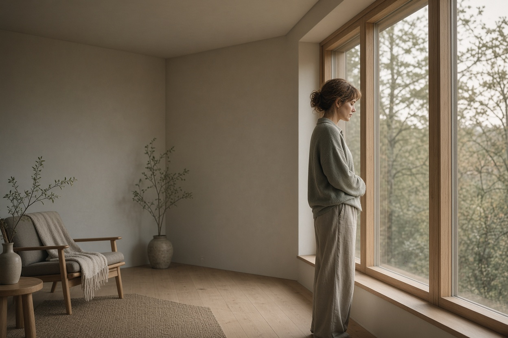

В моём кабинете часто звучит одна и та же фраза: «Простите, что я так много говорю о себе». Её произносят люди, которые имеют полное право занимать пространство, просить о помощи и выражать эмоции. Но вместо этого они сжимаются, извиняются за каждое проявление жизни. Это не случайная привычка — это паттерн, закреплённый годами подкрепления. Сегодня мы разберём, что стоит за токсической виной и как перестать быть должником за собственное существование.
Здоровая вина против токсической: в чём разница
Здоровая вина — это адаптивная эмоция. Она возникает, когда мы реально нарушили границы другого человека или сделали что-то вопреки своим ценностям. Она сигнализирует: «Я совершил ошибку, нужно её исправить». После извинений или действий вина уходит. Токсическая вина — это хронический фон, который не связан с конкретным поступком или остаётся после того, как ситуация решена. Человек чувствует себя виноватым просто за то, что он есть: за свои желания, за отдых, за отказ, за то, что занял место. Этот тип вины не мобилизует к действию, а парализует, заставляя постоянно заглаживать несуществующую вину.
Ключевой критерий — пропорциональность. Здоровая вина пропорциональна проступку. Токсическая — глобальна и диффузна: «Я плохой, потому что не оправдал ожиданий», «Я эгоист, если думаю о себе». Она не мобилизует, а заставляет человека бесконечно доказывать свою «достаточность». Чтобы отличить одно от другого, полезно задавать себе вопрос: «Что именно я сделал не так?» Если ответа нет или он размыт — вина, скорее всего, ложная.
Когнитивные искажения, питающие вину
Токсическая вина почти никогда не существует в вакууме — её поддерживают конкретные ошибки мышления. Первое — долженствование: «Я должен быть идеальным партнёром, другом, сотрудником», «Я не должен огорчать других». Любое несоответствие этой жёсткой норме запускает чувство вины. Второе — чтение мыслей: уверенность, что другие думают о вас плохо, осуждают или разочарованы без реальных подтверждений. Третье — катастрофизация: «Если я откажу, наши отношения разрушатся», «Если я возьму выходной, меня уволят».
Эти искажения формируются в детстве, когда ребёнка учили, что его потребности второстепенны или что он ответственен за эмоции родителей. Во взрослом возрасте человек продолжает жить по этим правилам, автоматически включая вину как предохранитель. Механизм устарел и не соответствует реальности, но автоматизм мышления упорно его воспроизводит. Именно здесь начинается цикл, который мы разберём далее.
Токсическая вина — это не высокая мораль, а когнитивная ловушка. Она не делает вас лучше — она истощает ресурс, необходимый для настоящих отношений с собой и другими.
Цикл избегания и подкрепления
Токсическая вина запускает поведение избегания: человек извиняется чаще, чем нужно, угождает, отказывается от своих интересов, чтобы не чувствовать вину. Парадокс в том, что избегание только усиливает вину. Например, вы извиняетесь за просьбу о повышении — и вместо облегчения чувствуете себя ещё более ничтожным. Цикл замыкается: чем больше вы пытаетесь «загладить» несуществующую вину, тем сильнее убеждаетесь, что виноваты. К типичным проявлениям этого цикла относятся: извинения за эмоции даже тогда, когда их вызвали другие люди, чувство вины за отдых и заботу о себе, страх отказа из-за мысли, что отказ разрушит отношения.
Важно осознать: вы не обязаны «заслуживать» право на жизнь — оно у вас есть априори. Токсическая вина внушает обратное, заставляя постоянно доказывать свою ценность через жертвы. Но настоящая близость и уважение строятся не на угождении, а на честном присутствии. Когда вы перестаёте извиняться за свою жизнь, вы даёте себе разрешение быть реальным, а не удобным.
Как разорвать цикл: практические шаги
Первый шаг — научиться различать здоровую вину и токсическую. Задавайте себе вопрос: «Я сделал что-то реально wrong, или это просто мой внутренний критик диктует?» Если вы не нарушали границ и не действовали вопреки ценностям, скорее всего, вина ложная. Второй шаг — оспаривать долженствования. Замените «Я должен быть идеальным» на «Я могу стараться, но имею право на ошибку».
Техника «Протокол вины»
Когда чувствуете вину, запишите: 1) ситуацию, 2) мысль, вызвавшую вину (например, «Я эгоист, что не пошёл на эту встречу»), 3) доказательства за и против этой мысли, 4) более реалистичную мысль (например, «Я имею право отказаться, у меня были важные дела»). Регулярное выполнение снижает автоматизм вины и помогает перестроить когнитивные схемы.
Третий шаг — сознательно отказываться от извинений там, где они не нужны. Вместо «Простите, что отвлекаю» — «Спасибо, что уделили время». Вместо «Извините за вопрос» — «У меня есть вопрос». Меняя формулировки, вы перепрограммируете нейронные связи и снижаете уровень тревоги. Четвёртый шаг — разрешить себе занимать пространство: громко дышать, говорить о своих потребностях, брать паузу. Это не эгоизм, а базовая гигиена психики. Токсическая вина не исчезнет за один день, но с каждым маленьким актом самопринятия её власть ослабевает. Вы не обязаны извиняться за своё существование. Ваша жизнь — не долг, а данность. Чем быстрее вы это примете, тем больше энергии останется для настоящей близости и развития.

Сложно справиться с этим в одиночку?
На первичной 20-минутной ознакомительной встрече мы бережно разберем вашу ситуацию.
Записаться на консультацию